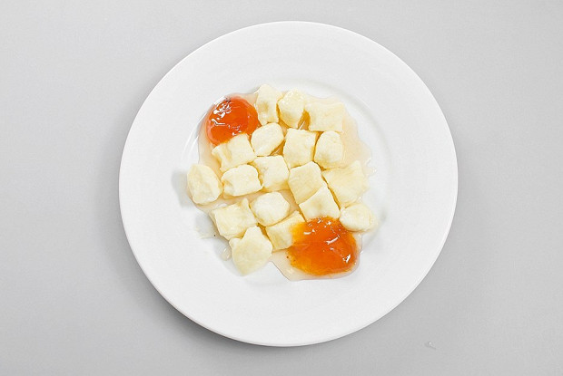
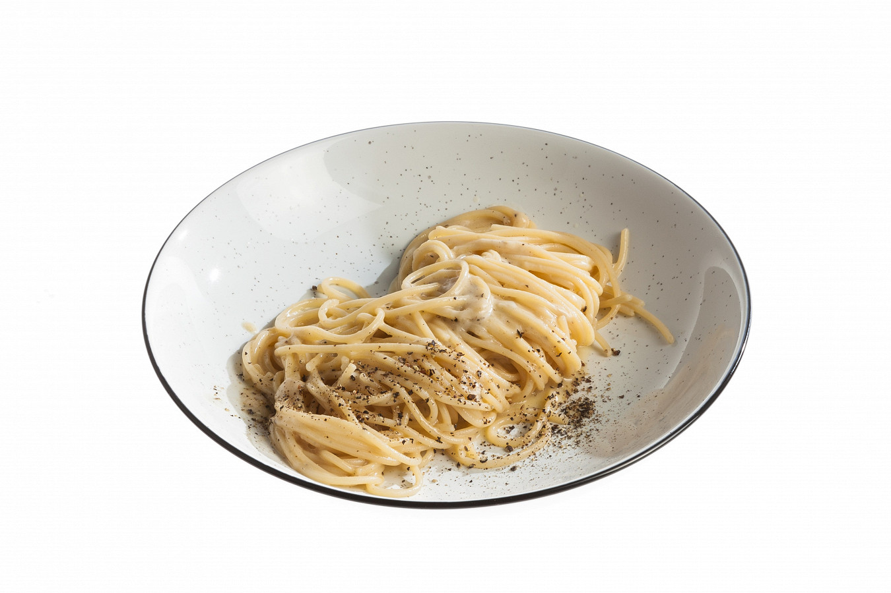
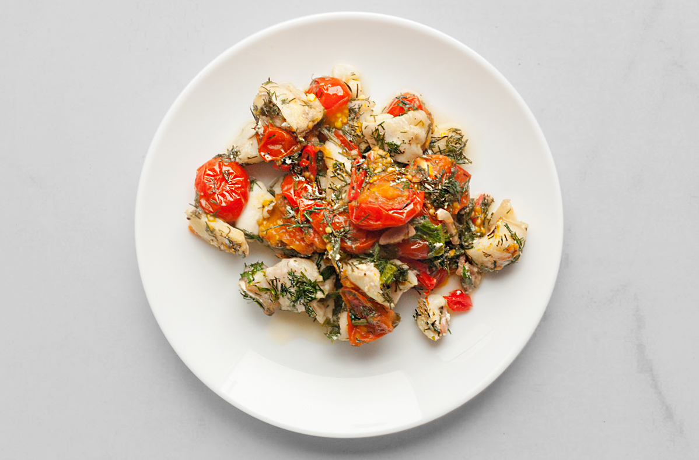
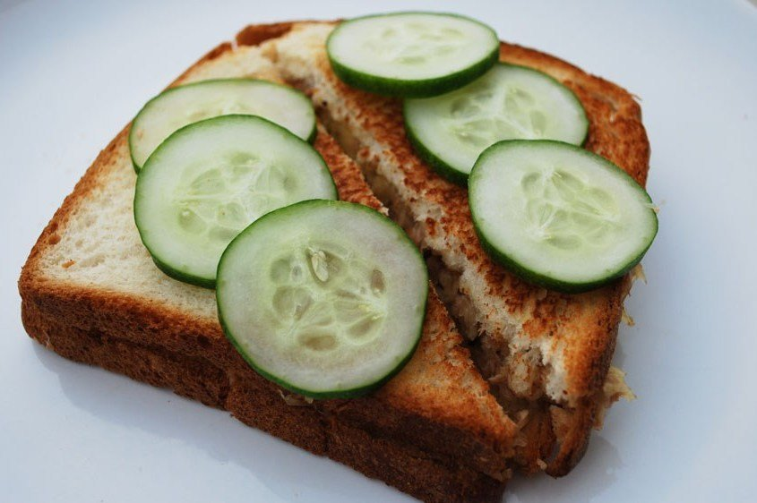
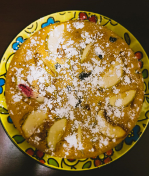
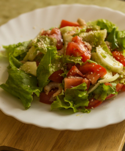
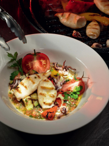

Рецепты:

Завтрак для ленивых
Ленивые вареники — те же галушки, только сладкие и выступающие сольно. Готовятся не дольше любой каши и в отличие от любой каши не вгоняют по утрам своим видом в тоску. Их можно подавать с любимым вареньем, домашним мармеладом, деревенской сметаной или любым сиропом. А можно просто полить растопленным сливочным маслом — все равно будет вкусно.

Качо-э-пепе
Качо-э-пепе — буквально означает спагетти с сыром и перцем. Очень вкусная и сытная итальянская паста, которая популярна во всем мире.

Треска с помидорами
Треска — крупная морская рыба с сочным белым мясом. Это к тому же очень диетичная рыба, богатая белком. И готовится она очень просто. Треска с помидорами запекается в духовке всего за пятнадцать минут — достаточно поместить все ингредиенты в кулинарный рукав и встряхнуть.

Сэндвичи с тунцом и сыром
Этот типичный английский сэндвич на родине зовут tuna melt — тунец в нем скрепляется плавящимся сыром. Если не нравится вкус тунцового сока, можно его слить и добавить вместо него столовую ложку оливкового масла

Классическая шарлотка
Классическая шарлотка. Важное сладкое блюдо советской и постсоветской истории. Легкое, пышное тесто, максимум яблочной начинки — у шарлотки всегда был образ приятного, простого и при этом лакомого и диетического блюда. Яблоки настоятельно рекомендуем взять из кислых сортов — вроде антоновки. Их можно класть как сырыми, так и предварительно слегка карамелизованными на сковородке. И сахара лучше не жалеть. Он магическим образом распределяется в нужном количестве в тесте, а излишки образуют сладкую корочку.

Салат с креветками и кунжутом
Салат с креветками и кунжутом прост и лаконичен, поскольку эти морепродукты сами по себе не нуждаются в лишнем сопровождении. Майонез в салате можно заменить на натуральный йогурт или оливковое масло, смешанное с лимонным соком. А дополнить блюдо — крупно нарезанным авокадо и тертым пармезаном. Сами креветки можно приготовить тремя путями: отварить, запечь или поджарить. Главное, не делать это долгое время. При каждой из этих обработок вкус креветок будет меняться по-разному, но менее привлекательным от этого не станет.

Салат с кальмарами, овощами и копченым сыром
Легкий в приготовлении и очень нарядный на тарелке, салат с кальмарами, овощами и копченым сыром хорошо подойдет к столу для гостей или просто в качестве или в качестве лакомства для себя. Нежные на вкус моллюски вполне доступны по цене, в отличие от других морепродуктов, а для их приготовления достаточно буквально пары минут. Для этого салата лучше подойдут мини-кальмары — они хороши тем, что на них появляются красивые подпалины от гриля. Чтобы было проще их разделывать, можно слегка подморозить свежие тушки.

Бифштекс с соусом из белого портвейна